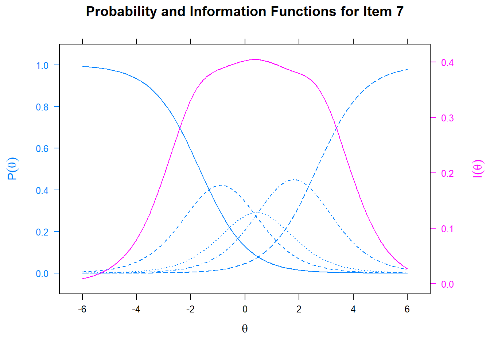

Selected Topics of Psychometrics (NMST570)
Homework Assignment 5: IRT models
Kateřina Hudáčová (Benjamín Kunc)
Note: The assignment is due on December 13, 2021. Send your code and html/pdf report to dlouha@cs.cas.cz (and to martinkova@cs.cas.cz in copy).
1. Read and comment on Chapter 5, 6, and 7 on https://perusall.com. [2 pts]
2. Run the code for the Chapter 5, 6, and 7, available on course webpage http://www.cs.cas.cz/martinkova/NMST570.html.
3. Complete the CAPlearnR online tutorials for IRT models. Attach certificates. [4 pts]
Note: If you meet any issues, contact the the TA or the instructor before 8 AM of the due date.
4. Project preparation.
Explore the Czech matura data OR DATA OF YOUR CHOICE as described below. You can work with 1-2 teammates on this task. All teammate names have to be included on your answer sheet. [4 pts]
I am working with the BFI2 dataset from the ShinyItemAnalysis package. The BFI2 dataset contains responses of \(1733\) Czech respondents to the Big Five Inventory 2, as well as information about their age, education, and gender. The BFI2 items are scored using a 5-point Likert scale. For the purpose of this assignment I will only be using the extraversion items of the BFI2.
data(BFI2, package='ShinyItemAnalysis')
# Data frames for domains
BFI2_e <- BFI2[, seq(1, 56, 5)]I created datasets for the extraversion dimension.
4a. 1PL IRT model for binary data.
Binarize your data and fit 1PL IRT model. Plot and discuss a Person-Item map (Wright map).
I binarized the extraversion dimension of theBFI2 data and fit a Rasch model using the mirt package.
# binarize data
bin <- function(x) {
ifelse(x %in% 4:5, 1, 0)
}
BFI2_e_bin <- data.frame(lapply(BFI2_e, bin))
# fit model
fit_rasch <- mirt::mirt(data = BFI2_e_bin, model = 1, itemtype = "Rasch", SE = TRUE)##
Iteration: 1, Log-Lik: -12288.471, Max-Change: 0.29827
Iteration: 2, Log-Lik: -12232.194, Max-Change: 0.24077
Iteration: 3, Log-Lik: -12209.315, Max-Change: 0.16961
Iteration: 4, Log-Lik: -12200.997, Max-Change: 0.10856
Iteration: 5, Log-Lik: -12198.173, Max-Change: 0.06552
Iteration: 6, Log-Lik: -12197.249, Max-Change: 0.03817
Iteration: 7, Log-Lik: -12196.949, Max-Change: 0.02233
Iteration: 8, Log-Lik: -12196.857, Max-Change: 0.01205
Iteration: 9, Log-Lik: -12196.828, Max-Change: 0.00674
Iteration: 10, Log-Lik: -12196.819, Max-Change: 0.00383
Iteration: 11, Log-Lik: -12196.816, Max-Change: 0.00208
Iteration: 12, Log-Lik: -12196.815, Max-Change: 0.00116
Iteration: 13, Log-Lik: -12196.814, Max-Change: 0.00065
Iteration: 14, Log-Lik: -12196.814, Max-Change: 0.00035
Iteration: 15, Log-Lik: -12196.814, Max-Change: 0.00020
Iteration: 16, Log-Lik: -12196.814, Max-Change: 0.00011
Iteration: 17, Log-Lik: -12196.814, Max-Change: 0.00006
##
## Calculating information matrix...# intercept/slope parameter estimates
coef(fit_rasch, SE = TRUE)## $i1
## a1 d g u
## par 1 0.756 0 1
## CI_2.5 NA 0.624 NA NA
## CI_97.5 NA 0.889 NA NA
##
## $i6
## a1 d g u
## par 1 0.620 0 1
## CI_2.5 NA 0.489 NA NA
## CI_97.5 NA 0.751 NA NA
##
## $i11
## a1 d g u
## par 1 0.858 0 1
## CI_2.5 NA 0.725 NA NA
## CI_97.5 NA 0.991 NA NA
##
## $i16
## a1 d g u
## par 1 -0.700 0 1
## CI_2.5 NA -0.832 NA NA
## CI_97.5 NA -0.567 NA NA
##
## $i21
## a1 d g u
## par 1 -0.720 0 1
## CI_2.5 NA -0.852 NA NA
## CI_97.5 NA -0.587 NA NA
##
## $i26
## a1 d g u
## par 1 -0.048 0 1
## CI_2.5 NA -0.177 NA NA
## CI_97.5 NA 0.082 NA NA
##
## $i31
## a1 d g u
## par 1 -1.091 0 1
## CI_2.5 NA -1.228 NA NA
## CI_97.5 NA -0.954 NA NA
##
## $i36
## a1 d g u
## par 1 -0.364 0 1
## CI_2.5 NA -0.494 NA NA
## CI_97.5 NA -0.234 NA NA
##
## $i41
## a1 d g u
## par 1 0.111 0 1
## CI_2.5 NA -0.018 NA NA
## CI_97.5 NA 0.240 NA NA
##
## $i46
## a1 d g u
## par 1 0.357 0 1
## CI_2.5 NA 0.227 NA NA
## CI_97.5 NA 0.486 NA NA
##
## $i51
## a1 d g u
## par 1 -0.812 0 1
## CI_2.5 NA -0.945 NA NA
## CI_97.5 NA -0.678 NA NA
##
## $i56
## a1 d g u
## par 1 0.456 0 1
## CI_2.5 NA 0.326 NA NA
## CI_97.5 NA 0.587 NA NA
##
## $GroupPars
## MEAN_1 COV_11
## par 0 1.970
## CI_2.5 NA 1.777
## CI_97.5 NA 2.164# IRT parameter estimates
coef(fit_rasch, SE = TRUE, IRTpars = TRUE)## $i1
## a b g u
## par 1 -0.756 0 1
## CI_2.5 NA -0.889 NA NA
## CI_97.5 NA -0.624 NA NA
##
## $i6
## a b g u
## par 1 -0.620 0 1
## CI_2.5 NA -0.751 NA NA
## CI_97.5 NA -0.489 NA NA
##
## $i11
## a b g u
## par 1 -0.858 0 1
## CI_2.5 NA -0.991 NA NA
## CI_97.5 NA -0.725 NA NA
##
## $i16
## a b g u
## par 1 0.700 0 1
## CI_2.5 NA 0.567 NA NA
## CI_97.5 NA 0.832 NA NA
##
## $i21
## a b g u
## par 1 0.720 0 1
## CI_2.5 NA 0.587 NA NA
## CI_97.5 NA 0.852 NA NA
##
## $i26
## a b g u
## par 1 0.048 0 1
## CI_2.5 NA -0.082 NA NA
## CI_97.5 NA 0.177 NA NA
##
## $i31
## a b g u
## par 1 1.091 0 1
## CI_2.5 NA 0.954 NA NA
## CI_97.5 NA 1.228 NA NA
##
## $i36
## a b g u
## par 1 0.364 0 1
## CI_2.5 NA 0.234 NA NA
## CI_97.5 NA 0.494 NA NA
##
## $i41
## a b g u
## par 1 -0.111 0 1
## CI_2.5 NA -0.240 NA NA
## CI_97.5 NA 0.018 NA NA
##
## $i46
## a b g u
## par 1 -0.357 0 1
## CI_2.5 NA -0.486 NA NA
## CI_97.5 NA -0.227 NA NA
##
## $i51
## a b g u
## par 1 0.812 0 1
## CI_2.5 NA 0.678 NA NA
## CI_97.5 NA 0.945 NA NA
##
## $i56
## a b g u
## par 1 -0.456 0 1
## CI_2.5 NA -0.587 NA NA
## CI_97.5 NA -0.326 NA NA
##
## $GroupPars
## MEAN_1 COV_11
## par 0 1.970
## CI_2.5 NA 1.777
## CI_97.5 NA 2.164# ICCs
plot(fit_rasch, type = "trace", facet_items = FALSE)# TSC
plot(fit_rasch)# factor scores
fs_SE <- mirt::fscores(fit_rasch, full.scores.SE = TRUE)
head(fs_SE, 3)## F1 SE_F1
## [1,] 1.4711763 0.6596684
## [2,] 1.4711763 0.6596684
## [3,] -0.9902839 0.6171505# first respondent
summary(fs_SE[, 1])## Min. 1st Qu. Median Mean 3rd Qu. Max.
## -2.4832993 -0.9902839 0.0380714 0.0000158 1.0658842 2.5480626sd(fs_SE[, 1])## [1] 1.248974# Wright map
b <- coef(fit_rasch, simplify = TRUE, IRTpars = TRUE)$items[, "b"]
ggWrightMap(fs_SE[, 1], b)
As we can see from the parameter estimates, the ability variance is estimated at \(1.97\) with a confidence interval of \(1.78; 2.16\). For item 31 (most difficult item, “Považuji se za někoho, kdo je někdy plachý, introvertní.”) an ability (extraversion) of almost 1.1 SD above the mean is required to answer “Disagree strongly” or “Disagree a little” (reversed item) with a \(50\%\) probability. The first respondent in this dataset has an ability (extraversion) of \(1.47 + / - 0.66\) and the model discrimination is estimated at \(1.24\).
The Wright map confirms that item 7 of the extraversion dimension (coded as item 31) is the most difficult and item 3 (coded as item 11, “Považuji se za někoho, kdo zřídkakdy pociťuje vzrušení a nadšení pro věc.”) is the least difficult.
4b. Other IRT models, model selection
Fit more IRT models (2PL, 3PL/4PL only if they make sense) including models for ordinal data, if ordinal items are present in your dataset. Select optimal model: Provide reasoning for selected IRT model (based on data type or using comparison of more IRT models). Provide model equation(s) and interpretation of parameters. Which method was used for estimation of parameters?
I decided to fit cummulative logit IRT models – graded response model and graded ratings scale model – since I’m working with ordinal items based on a Likert scale which also remains the same for all items.
# GRM
fit_GRM <- mirt::mirt(BFI2_e, model = 1, itemtype = "graded")##
Iteration: 1, Log-Lik: -27653.291, Max-Change: 0.91521
Iteration: 2, Log-Lik: -27166.089, Max-Change: 0.58223
Iteration: 3, Log-Lik: -27062.095, Max-Change: 0.32970
Iteration: 4, Log-Lik: -27028.766, Max-Change: 0.23056
Iteration: 5, Log-Lik: -27015.502, Max-Change: 0.08756
Iteration: 6, Log-Lik: -27008.693, Max-Change: 0.04862
Iteration: 7, Log-Lik: -27005.074, Max-Change: 0.04134
Iteration: 8, Log-Lik: -27002.859, Max-Change: 0.04102
Iteration: 9, Log-Lik: -27001.511, Max-Change: 0.03362
Iteration: 10, Log-Lik: -27000.932, Max-Change: 0.02151
Iteration: 11, Log-Lik: -27000.286, Max-Change: 0.01376
Iteration: 12, Log-Lik: -26999.921, Max-Change: 0.01132
Iteration: 13, Log-Lik: -26999.391, Max-Change: 0.00408
Iteration: 14, Log-Lik: -26999.372, Max-Change: 0.00218
Iteration: 15, Log-Lik: -26999.363, Max-Change: 0.00172
Iteration: 16, Log-Lik: -26999.348, Max-Change: 0.00147
Iteration: 17, Log-Lik: -26999.346, Max-Change: 0.00039
Iteration: 18, Log-Lik: -26999.346, Max-Change: 0.00021
Iteration: 19, Log-Lik: -26999.346, Max-Change: 0.00019
Iteration: 20, Log-Lik: -26999.346, Max-Change: 0.00085
Iteration: 21, Log-Lik: -26999.346, Max-Change: 0.00055
Iteration: 22, Log-Lik: -26999.345, Max-Change: 0.00011
Iteration: 23, Log-Lik: -26999.345, Max-Change: 0.00033
Iteration: 24, Log-Lik: -26999.345, Max-Change: 0.00016
Iteration: 25, Log-Lik: -26999.345, Max-Change: 0.00008coef(fit_GRM)## $i1
## a1 d1 d2 d3 d4
## par 1.814 4.849 2.266 0.857 -2.141
##
## $i6
## a1 d1 d2 d3 d4
## par 1.661 4.68 2.135 0.627 -2.1
##
## $i11
## a1 d1 d2 d3 d4
## par 0.63 3.288 1.573 0.703 -1.329
##
## $i16
## a1 d1 d2 d3 d4
## par 2.341 3.013 0.54 -0.87 -2.986
##
## $i21
## a1 d1 d2 d3 d4
## par 1.812 2.872 0.704 -0.822 -3.343
##
## $i26
## a1 d1 d2 d3 d4
## par 0.8 4.526 1.947 -0.039 -2.178
##
## $i31
## a1 d1 d2 d3 d4
## par 1.866 2.311 -0.081 -1.208 -3.204
##
## $i36
## a1 d1 d2 d3 d4
## par 0.765 3.161 1.123 -0.308 -2.593
##
## $i41
## a1 d1 d2 d3 d4
## par 1.272 3.882 1.817 0.117 -2.366
##
## $i46
## a1 d1 d2 d3 d4
## par 1.974 4.573 2.064 0.413 -1.973
##
## $i51
## a1 d1 d2 d3 d4
## par 1.636 3.18 0.69 -0.866 -3.123
##
## $i56
## a1 d1 d2 d3 d4
## par 1.105 4.712 2.122 0.406 -2.072
##
## $GroupPars
## MEAN_1 COV_11
## par 0 1# GRSM
fit_GRSM <- mirt::mirt(BFI2_e, model = 1, itemtype = "grsmIRT")##
Iteration: 1, Log-Lik: -36364.919, Max-Change: 1.13345
Iteration: 2, Log-Lik: -27774.218, Max-Change: 0.26460
Iteration: 3, Log-Lik: -27653.409, Max-Change: 0.15790
Iteration: 4, Log-Lik: -27622.966, Max-Change: 0.09836
Iteration: 5, Log-Lik: -27607.112, Max-Change: 0.08106
Iteration: 6, Log-Lik: -27592.498, Max-Change: 0.08198
Iteration: 7, Log-Lik: -27582.188, Max-Change: 0.05701
Iteration: 8, Log-Lik: -27577.430, Max-Change: 0.05774
Iteration: 9, Log-Lik: -27572.650, Max-Change: 0.04208
Iteration: 10, Log-Lik: -27569.315, Max-Change: 0.04403
Iteration: 11, Log-Lik: -27565.505, Max-Change: 0.02378
Iteration: 12, Log-Lik: -27563.739, Max-Change: 0.02903
Iteration: 13, Log-Lik: -27560.732, Max-Change: 0.01493
Iteration: 14, Log-Lik: -27559.331, Max-Change: 0.01425
Iteration: 15, Log-Lik: -27558.607, Max-Change: 0.01158
Iteration: 16, Log-Lik: -27557.728, Max-Change: 0.00705
Iteration: 17, Log-Lik: -27557.494, Max-Change: 0.00501
Iteration: 18, Log-Lik: -27557.331, Max-Change: 0.00459
Iteration: 19, Log-Lik: -27556.855, Max-Change: 0.00246
Iteration: 20, Log-Lik: -27556.834, Max-Change: 0.00081
Iteration: 21, Log-Lik: -27556.830, Max-Change: 0.00080
Iteration: 22, Log-Lik: -27556.823, Max-Change: 0.00089
Iteration: 23, Log-Lik: -27556.821, Max-Change: 0.00055
Iteration: 24, Log-Lik: -27556.820, Max-Change: 0.00049
Iteration: 25, Log-Lik: -27556.820, Max-Change: 0.00013
Iteration: 26, Log-Lik: -27556.819, Max-Change: 0.00028
Iteration: 27, Log-Lik: -27556.819, Max-Change: 0.00007coef(fit_GRSM, simplify = TRUE)## $items
## a1 b1 b2 b3 b4 c
## i1 1.539 3.055 1.478 0.429 -1.268 0.000
## i6 1.566 3.055 1.478 0.429 -1.268 -0.066
## i11 1.073 3.055 1.478 0.429 -1.268 0.126
## i16 1.143 3.055 1.478 0.429 -1.268 -1.010
## i21 1.400 3.055 1.478 0.429 -1.268 -1.014
## i26 1.510 3.055 1.478 0.429 -1.268 -0.296
## i31 1.141 3.055 1.478 0.429 -1.268 -1.381
## i36 1.311 3.055 1.478 0.429 -1.268 -0.648
## i41 1.525 3.055 1.478 0.429 -1.268 -0.320
## i46 1.388 3.055 1.478 0.429 -1.268 -0.109
## i51 1.473 3.055 1.478 0.429 -1.268 -0.970
## i56 1.587 3.055 1.478 0.429 -1.268 -0.111
##
## $means
## F1
## 0
##
## $cov
## F1
## F1 1# model comparison
anova(fit_GRM, fit_GRSM)##
## Model 1: mirt::mirt(data = BFI2_e, model = 1, itemtype = "grsmIRT")
## Model 2: mirt::mirt(data = BFI2_e, model = 1, itemtype = "graded")It seems that the restricted model (GRSM) is a better fit for this data. Equation: \({\pi\ast}_{pik} = P(Y_{pi} \geq k|\theta_p) = \frac{\exp(a_i(\theta_p - (b_i + \lambda_k)))}{1 + \exp(a_i(\theta_p - (b_i + \lambda_k)))}\) Parameter \(a_1\) represents the item-specific slope and parameter \(c\) corresponds to the item-specific location.
4c. Item parameters
Plot item characteristic curves, item information curves, test information curve. Provide table of model parameter estimates and their standard errors, or confidence intervals. Which item is most informative for ability level 1SD above average?
I used the itemplot function from the mirt package to plot ICCs of items 3 (i11) and 7 (i31). For IIC and TIC I used the plot function.
# category response curves
mirt::itemplot(fit_GRSM, item = 3, type = "infotrace")mirt::itemplot(fit_GRSM, item = 7, type = "infotrace")
# item information curves
plot(fit_GRSM, type = "infotrace", facet_items = FALSE)# test information curve
plot(fit_GRSM, type = "infoSE")coef(fit_GRSM)## $i1
## a1 b1 b2 b3 b4 c
## par 1.539 3.055 1.478 0.429 -1.268 0
##
## $i6
## a1 b1 b2 b3 b4 c
## par 1.566 3.055 1.478 0.429 -1.268 -0.066
##
## $i11
## a1 b1 b2 b3 b4 c
## par 1.073 3.055 1.478 0.429 -1.268 0.126
##
## $i16
## a1 b1 b2 b3 b4 c
## par 1.143 3.055 1.478 0.429 -1.268 -1.01
##
## $i21
## a1 b1 b2 b3 b4 c
## par 1.4 3.055 1.478 0.429 -1.268 -1.014
##
## $i26
## a1 b1 b2 b3 b4 c
## par 1.51 3.055 1.478 0.429 -1.268 -0.296
##
## $i31
## a1 b1 b2 b3 b4 c
## par 1.141 3.055 1.478 0.429 -1.268 -1.381
##
## $i36
## a1 b1 b2 b3 b4 c
## par 1.311 3.055 1.478 0.429 -1.268 -0.648
##
## $i41
## a1 b1 b2 b3 b4 c
## par 1.525 3.055 1.478 0.429 -1.268 -0.32
##
## $i46
## a1 b1 b2 b3 b4 c
## par 1.388 3.055 1.478 0.429 -1.268 -0.109
##
## $i51
## a1 b1 b2 b3 b4 c
## par 1.473 3.055 1.478 0.429 -1.268 -0.97
##
## $i56
## a1 b1 b2 b3 b4 c
## par 1.587 3.055 1.478 0.429 -1.268 -0.111
##
## $GroupPars
## MEAN_1 COV_11
## par 0 1# 1SD above avg item information
testinfo(fit_GRSM, 1, individual = TRUE)## [,1] [,2] [,3] [,4] [,5] [,6] [,7] [,8] [,9] [,10] [,11] [,12]
## [1,] 0.6394934 0.6587602 0.3245168 0.392216 0.5603175 0.6134839 0.3986821 0.488654 0.6227589 0.5332194 0.6068691 0.672575The slope for items 3 (i11) and 7 (i31) are quite similar, but it seems that even respondents with lower latent extraversion tend to disagree with item 3 (“Považuji se za někoho, kdo zřídkakdy pociťuje vzrušení a nadšení pro věc.”). The last item (i56) is the most informative for extraversion level 1SD above average.
4d. Ability estimates
Provide ability estimate for the first respondent, including the standard error or confidence interval. Plot relationship between ability estimates in IRT models and traditional ability estimates based on (standardized) total scores.
For the ability estimate I used the fscores function from the mirt package.
fs_SE <- mirt::fscores(fit_GRSM, full.scores.SE = TRUE)
fs_SE[1,]## F1 SE_F1
## 1.016787 0.344977summary(fs_SE[1,])## Min. 1st Qu. Median Mean 3rd Qu. Max.
## 0.3450 0.5129 0.6809 0.6809 0.8488 1.0168fs <- mirt::fscores(fit_GRSM)
sts <- as.vector(scale(rowSums(BFI2_e)))
# plot
plot(fs ~ sts, xlab = "Standardized total score", ylab = "Factor score")cor(fs, sts)## [,1]
## F1 0.9905268The ability of the first respondent is estimated at \(1.017\) with a standard error of \(0.35\) and a confidence interval of \(0.35; 1.02\).
4e. (extra) Interactive ShinyItemAnalysis app.
Use the interactive ShinyItemAnalysis application to create a report with selected IRT model. If your data is too large, consider using sample data (e.g. from a random sample of 2000 respondents and selection of items - single domain, etc.).
Your text (description of methods).
5. Use/discuss your own data and/or provide constructive feedback to the lecture, exercises, or any of the material. [BONUS 1 pt]
Your text.